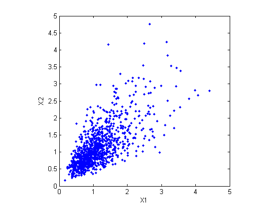
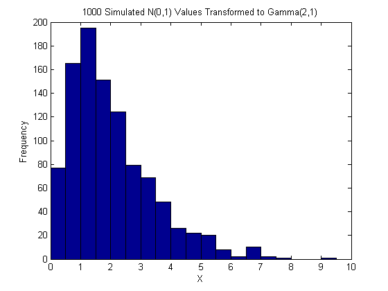
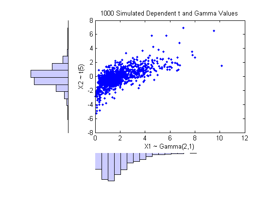
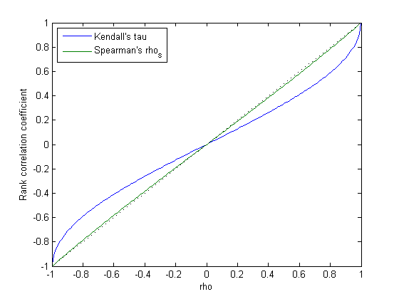
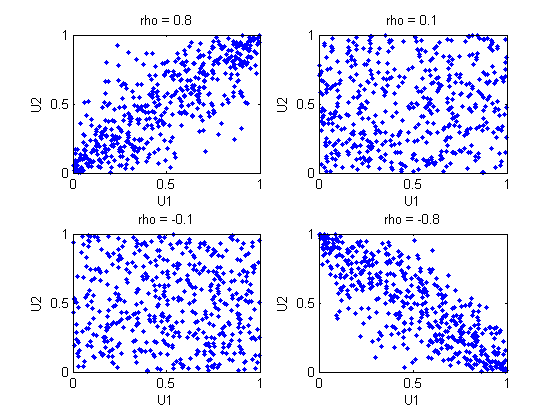
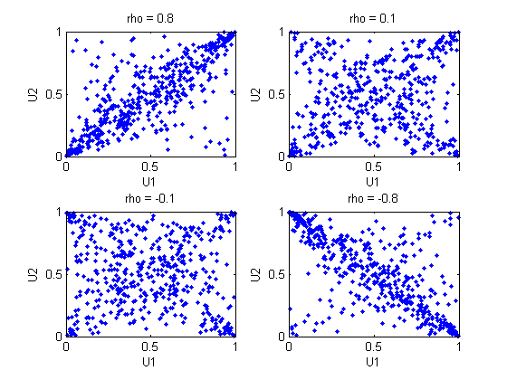
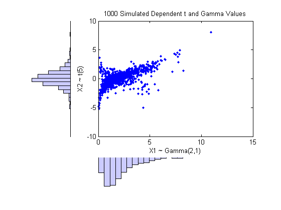
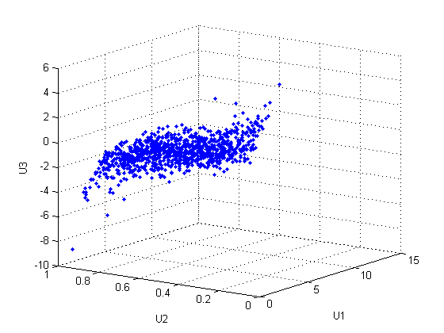
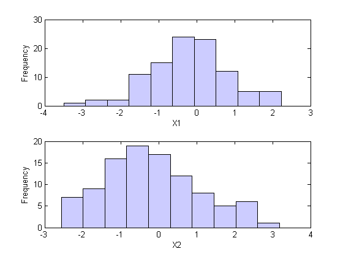
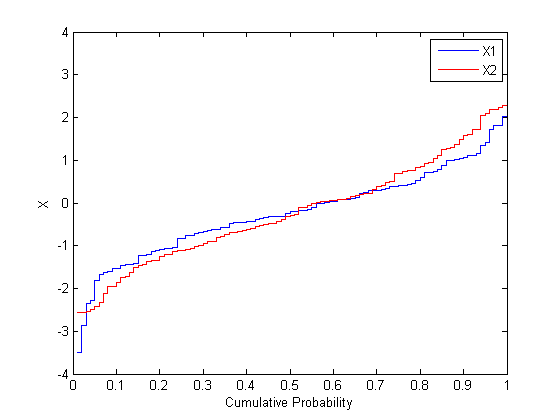

コピュラを使用した従属乱数変数のシミュレーション
MATLAB® は、ランダムな入力やノイズを組み込むシミュレーションを実行するのに理想的なツールです。Statistics Toolbox™ には、多くの一般的な一変量分布に従って一連の乱数データを作成する関数が用意されています。また、多変量正規分布や多変量 t 分布などの多変量分布から乱数データを生成する関数もあります。ただし、変数間に複雑な関係がある多変量分布や、個々の変数が異なる分布からのものである多変量分布からデータを生成するための方法は、組み込まれていません。
最近、コピュラはシミュレーション モデルで一般的になってきました。コピュラは、変数間の依存関係を記述する関数であり、相関がある多変量データをモデル化する分布を作成する方法を提供します。コピュラを使うと、データ解析者は一変量周辺分布を指定することにより多変量分布を作成し、次に、特定のコピュラを選択し、変数間の相関構造を与えることができます。より高次元の分布と同様に、2 変量の分布も可能です。このデモでは、Statistics Toolbox を使用して MATLAB で従属多変量乱数データを生成するためのコピュラの使用方法について説明します。
目次
シミュレーション入力間の依存関係
モンテ・カルロ シミュレーションの設計で決めることの 1 つは、ランダムな入力に対する確率分布の選択です。個々の変数それぞれに対して分布を選択することは、多くの場合簡単ですが、入力の間にどのような依存関係があるかを判断することは、簡単ではないことがあります。理想的には、シミュレーションへの入力データは、モデル化される実際の量間の依存関係について既知であることを、反映しなければなりません。ただし、シミュレーションにおいて任意の依存関係について基にするべき情報がほとんどなかったり、あるいはまったくないことがあります。そのような場合、モデルの感度を判断するために、さまざまな可能性を試すことが有効です。
ただし、分布が標準多変量分布ではない場合、依存関係を持つランダムな入力を実際に作成することは、難しくなることがあります。さらに、標準多変量分布のいくつかでは、依存関係に非常に制限のあるタイプに限りモデル化できます。入力を独立にすることは、常に可能であり容易な選択ですが必ずしも目的にかなったものではなく、誤った結論を導く可能性があります。
たとえば、財務リスクのモンテ・カルロ シミュレーションには、保険損失のさまざまな原因を表すランダムな入力がある場合があります。これらの入力は、対数正規分布の乱数変数としてモデル化されることがあります。当然疑問となるのは、これら 2 つの入力間の依存関係がシミュレーションの結果にどのように影響するかということです。実際、同じランダムな条件が両原因に影響することが、実際のデータからわかることがあります。すなわち、シミュレーションにおいて、誤った結論につながる可能性を低減することができます。
対数正規分布を示す独立した乱数変数のシミュレーションは自明です。最も簡単な方法は、関数 lognrnd を使用することです。ここで、関数 mvnrnd を使用して、n 組の独立した正規乱数変数を生成してから、それらを累乗します。ここで使われている共分散行列は対角形であること、つまり Z の列間に独立性があることに注意してください。
n = 1000; sigma = 0.5; SigmaInd = sigma.^2 .* [1 0; 0 1]
SigmaInd =
0.2500 0
0 0.2500
ZInd = mvnrnd([0 0], SigmaInd, n); XInd = exp(ZInd); plot(XInd(:,1),XInd(:,2),'.'); axis equal; axis([0 5 0 5]); xlabel('X1'); ylabel('X2');

相関がある 2 変量対数正規乱数変数は、非ゼロの非対角項を持つ共分散行列を使って、生成することも容易です。
rho = .7; SigmaDep = sigma.^2 .* [1 rho; rho 1]
SigmaDep =
0.2500 0.1750
0.1750 0.2500
ZDep = mvnrnd([0 0], SigmaDep, n); XDep = exp(ZDep);
さらに散布図を表示することで、これら 2 つの 2 変量分布間の違いがわかります。
plot(XDep(:,1),XDep(:,2),'.'); axis equal; axis([0 5 0 5]); xlabel('X1'); ylabel('X2');
X2 の大きな値 (小さな値の場合も同様) に対して X1 の値が大きい場合、2 番目のデータ セットに相関の傾向があることは明らかです。この依存は、基本的な 2 変量正規分布の相関関係パラメーター rho によって決まります。シミュレーションから導き出された結論は、依存関係を持つ X1 と X2 が生成されたかどうかでかなり異なります。
この場合、2 変量対数正規分布を利用することができます。周辺分布が異なる対数正規分布である場合は、より高次元に容易に一般化されます。他の多変量分布も考えられますが、たとえば、多変量 t 分布とディリクレ分布はそれぞれ、t 分布とベータ分布する従属乱数変数をシミュレートするために使用されます。しかし、簡単な多変量分布は多くはなく、境界がすべて同じ族になる (あるいは、厳密に同じ分布にもなる) 場合に、適用が限られます。これは、多くの状況で実質的な制限となることがあります。
依存する 2 変量分布を作成するための一般的な方法
上記の 2 変量対数正規分布を作成する構造は簡単ですが、これはより一般に適用できる方法を説明するのに役立ちます。まず、2 変量正規分布からの値の組を生成します。これら 2 変量には、統計的な依存関係があり、それぞれは、正規周辺分布を持ちます。次に、周辺分布を対数正規分布に変更して、それぞれの変数に変換 (指数関数) を別々に適用します。変換された変数には、やはり統計的な依存関係があります。
適切な変換が見つかれば、この方法は一般化されて、他の周辺分布を持つ、2 変量の従属しているランダムなベクトルを作成できます。実際、累乗法のみを使う場合程簡単ではありませんが、そのような変換を作成する一般的な方法があります。
定義では、ここで PHI と示される正規累積分布関数 (CDF) を、標準の正規乱数変数に適用すると、区間 [0, 1] 上で一様である乱数変数になります。これは、Z が標準正規分布を持つ場合、U = PHI(Z) の累積分布関数が以下のようになることでわかります。
Pr{U <= u0} = Pr{PHI(Z) <= u0} = Pr{Z <= PHI^(-1)(u0)} = u0,さらに、これは U(0,1) の乱数変数の累積分布関数です。シミュレーションによって得られた正規分布と変換された値のヒストグラムは、以下の事実を示します。
n = 1000; z = normrnd(0,1,n,1); hist(z,-3.75:.5:3.75); xlim([-4 4]); title('1000 Simulated N(0,1) Random Values'); xlabel('Z'); ylabel('Frequency');

u = normcdf(z); hist(u,.05:.1:.95); title('1000 Simulated N(0,1) Values Transformed to U(0,1)'); xlabel('U'); ylabel('Frequency');

一変数の乱数生成の理論によると、U(0,1) に従う乱数変数に、任意の分布 F の累積分布逆関数を適用すると、正確に F 分布する乱数変数になります。これは逆関数法と呼ばれています。証明は、以前のケースに対する前述の証明とは本質的に逆になります。次のヒストグラムは、ガンマ分布への変換を示しています。
x = gaminv(u,2,1); hist(x,.25:.5:9.75); title('1000 Simulated N(0,1) Values Transformed to Gamma(2,1)'); xlabel('X'); ylabel('Frequency');
この 2 ステップの変換を 2 変量標準正規分布の各変数に適用して、任意の周辺分布を持つ従属乱数変数を作成できます。変換は各成分に別々に作用するので、2 つの結果の乱数変数は同じ周辺分布にはなりません。変換は、次の式で定義されます。
Z = [Z1 Z2] ~ N([0 0],[1 rho; rho 1]) U = [PHI(Z1) PHI(Z2)] X = [G1(U1) G2(U2)]
ここで、G1 と G2 は、2 つの可能な異なる分布の累積分布逆関数です。たとえば、t(5) 分布と Gamma(2,1) 周辺分布を持つ 2 変数分布からランダムなベクトルを生成します。
n = 1000; rho = .7; Z = mvnrnd([0 0], [1 rho; rho 1], n); U = normcdf(Z); X = [gaminv(U(:,1),2,1) tinv(U(:,2),5)];
このプロットは、周辺分布と依存関係の両方を示すために、スキャター プロットと同時にヒストグラムも示します。
[n1,ctr1] = hist(X(:,1)0.20); [n2,ctr2] = hist(X(:,2)0.20); subplot(2,2,2); plot(X(:,1),X(:,2),'.'); axis([0 12 -8 8]); h1 = gca; title('1000 Simulated Dependent t and Gamma Values'); xlabel('X1 ~ Gamma(2,1)'); ylabel('X2 ~ t(5)'); subplot(2,2,4); bar(ctr1,-n1,1); axis([0 12 -max(n1)*1.1 0]); axis('off'); h2 = gca; subplot(2,2,1); barh(ctr2,-n2,1); axis([-max(n2)*1.1 0 -8 8]); axis('off'); h3 = gca; set(h1,'Position',[0.35 0.35 0.55 0.55]); set(h2,'Position',[.35 .1 .55 .15]); set(h3,'Position',[.1 .35 .15 .55]); colormap([.8 .8 1]);
順位相関係数
この構造の X1 と X2 間の依存は、基本的な 2 変量正規分布の相関関係パラメーター rho によって決まります。 ただし、X1 と X2 の線形相関が rho であるということは成り立ちません。 たとえば、オリジナルの対数正規分布の場合、その相関の閉形式は次のようになります。
cor(X1,X2) = (exp(rho.*sigma.^2) - 1) ./ (exp(sigma.^2) - 1)
rho が 1 ではない場合は、rho より厳密に小さくなります。 上記のガンマ/t 分布のような、より一般的な場合には、X1 と X2 の線形相関は、rho での表現が困難または不可能です。しかし、シミュレーションを使用すると、同じ効果が起こることを示すことができます。
これは、線形相関係数は乱数変数間の線形の依存関係を表すためであり、非線形変換がこれらの乱数変数に適用されるときに、線形相関は保存されません。 代わりに、ケンドールの tau またはスピアマンの rho などの順位相関係数は、より適切です。
概略を説明すると、これらの順位相関は、他の大きい値 (または小さい値) に関連する 1 つの乱数変数の大きい値 (または小さい値) に対して、順位を測定します。しかし、線形相関係数とは違い、これらは、順位についての関連のみを測ります。その結果、順位相関は単調な変換では保存されます。特に、前述の transformation 法は、順位相関を保存します。 したがって、2 変量の正規分布 Z の順位相関を正確に知れば、変換された最終の乱数変数 X の順位相関が決まります。 rho は、基になっている 2 変量正規分布をパラメーター化するために必要になりますが、ケンドールの tau またはスピアマンの rho の方が、乱数変数の依存関係を説明する際により効果的です。なぜなら、これらは周辺分布の選択に依存しないからです。
2 変量正規分布の場合、ケンドールの tau またはスピアマンの rho と線形相関係数 rho には次の簡単な 1 対 1 写像があります。
tau = (2/pi)*arcsin(rho) or rho = sin(tau*pi/2) rho_s = (6/pi)*arcsin(rho/2) or rho = 2*sin(rho_s*pi/6)
subplot(1,1,1); rho = -1:.01:1; tau = 2.*asin(rho)./pi; rho_s = 6.*asin(rho./2)./pi; plot(rho,tau,'-', rho,rho_s,'-', [-1 1],[-1 1],'k:'); axis([-1 1 -1 1]); xlabel('rho'); ylabel('Rank correlation coefficient'); legend('Kendall''s tau', 'Spearman''s rho_s', 'location','northwest');
したがって、Z1 と Z2 の線形相関に対して、それらの周辺分布にかかわらず、正しい rho パラメーター値を選択することによって、X1 と X2 の指定する順位相関を作成することは容易です。
多変量正規分布の場合、スピアマンの順位相関は線形相関とほとんど同じです。しかし、最後に乱数変数に変換すると、このことは成り立ちません。
コピュラ
上記の説明の最初のステップは、コピュラ、明確にはガウス･コピュラとして知られるものを定義します。2 変量コピュラは、2 つの乱数変数の確率分布であり、それぞれの周辺分布は一様です。これら 2 つの変数は、完全に独立であるか、確定的に関連 (例: U2 = U1) があるか、あるいはこれらの中間的なものです。2 変量ガウス･コピュラの族は、線形相関行列 Rho = [1 rho; rho 1] によってパラメーター化されます。U1 と U2 は、rho が ±1 に近づくと線形依存性に近づき、rho がゼロに近づくと完全な独立に近づきます。
さまざまなレベルの rho に対してシミュレートされた乱数値のスキャター プロットは、ガウス・コピュラのさまざまな可能性の範囲を示しています。
n = 500; Z = mvnrnd([0 0], [1 0.8; 0.8 1], n); U = normcdf(Z,0,1); subplot(2,2,1); plot(U(:,1),U(:,2),'.'); title('rho = 0.8'); xlabel('U1'); ylabel('U2'); Z = mvnrnd([0 0], [1 .1; .1 1], n); U = normcdf(Z,0,1); subplot(2,2,2); plot(U(:,1),U(:,2),'.'); title('rho = 0.1'); xlabel('U1'); ylabel('U2'); Z = mvnrnd([0 0], [1 -0.1; -0.1 1], n); U = normcdf(Z,0,1); subplot(2,2,3); plot(U(:,1),U(:,2),'.'); title('rho = -0.1'); xlabel('U1'); ylabel('U2'); Z = mvnrnd([0 0], [1 -.8; -.8 1], n); U = normcdf(Z,0,1); subplot(2,2,4); plot(U(:,1),U(:,2),'.'); title('rho = -0.8'); xlabel('U1'); ylabel('U2');
U1 と U2 の間の依存関係は、X1 = G(U1) と X2 = G(U2) の周辺分布とは完全に別です。X1 と X2 は、任意の周辺分布でも与えられ、さらに同じ順位相関を持ちます。これは、コピュラの主な利点の 1 つです。依存関係と周辺分布をこのように別々に特定することが可能になります。
t コピュラ
さまざまなコピュラ族は、2 変量 t 分布から始め、対応する t 累積分布関数を使って変換することによって作成できます。2 変量 t 分布は、線形相関行列 Rho と自由度 nu でパラメーター化されます。こうして、たとえば、それぞれ自由度 1 と 5 を持つ多変量 t 分布に基づき、t(1) コピュラまたは t(5) コピュラを記述できます。
さまざまなレベルの rho に対してシミュレートされた乱数値のスキャター プロットは、t(1) コピュラのさまざまな可能性の範囲を示しています。
n = 500; nu = 1; T = mvtrnd([1 0.8; 0.8 1], nu, n); U = tcdf(T,nu); subplot(2,2,1); plot(U(:,1),U(:,2),'.'); title('rho = 0.8'); xlabel('U1'); ylabel('U2'); T = mvtrnd([1 .1; .1 1], nu, n); U = tcdf(T,nu); subplot(2,2,2); plot(U(:,1),U(:,2),'.'); title('rho = 0.1'); xlabel('U1'); ylabel('U2'); T = mvtrnd([1 -0.1; -0.1 1], nu, n); U = tcdf(T,nu); subplot(2,2,3); plot(U(:,1),U(:,2),'.'); title('rho = -0.1'); xlabel('U1'); ylabel('U2'); T = mvtrnd([1 -.8; -.8 1], nu, n); U = tcdf(T,nu); subplot(2,2,4); plot(U(:,1),U(:,2),'.'); title('rho = -0.8'); xlabel('U1'); ylabel('U2');
t コピュラは、ちょうどガウス･コピュラが持つように、U1 と U2 に対する一様な周辺分布を持ちます。t コピュラの成分間の順位相関 tau または rho_s は、ガウス･コピュラの rho とも同じ関数です。しかし、これらのプロットが示すように、t(1) コピュラは、これらの成分が同じ順位相関を持つ場合でも、ガウス･コピュラとはかなり異なります。この違いは、それらの依存関係の構造にあります。予想どおり、自由度パラメーター nu が大きくなるにつれて、t(nu) コピュラは対応するガウス･コピュラに近づきます。
ガウス･コピュラと同様に、任意の周辺分布は t コピュラに適用できます。たとえば、自由度 1 の t コピュラを使って、Gam(2,1) と t(5) 周辺分布を持つ 2 変量分布から、ランダムなベクトルを再び生成できます。
subplot(1,1,1) ; n = 1000; rho = .7; nu = 1; T = mvtrnd([1 rho; rho 1], nu, n); U = tcdf(T,nu); X = [gaminv(U(:,1),2,1) tinv(U(:,2),5)]; [n1,ctr1] = hist(X(:,1)0.20); [n2,ctr2] = hist(X(:,2)0.20); subplot(2,2,2); plot(X(:,1),X(:,2),'.'); axis([0 15 -10 10]); h1 = gca; title('1000 Simulated Dependent t and Gamma Values'); xlabel('X1 ~ Gamma(2,1)'); ylabel('X2 ~ t(5)'); subplot(2,2,4); bar(ctr1,-n1,1); axis([0 15 -max(n1)*1.1 0]); axis('off'); h2 = gca; subplot(2,2,1); barh(ctr2,-n2,1); axis([-max(n2)*1.1 0 -10 10]); axis('off'); h3 = gca; set(h1,'Position',[0.35 0.35 0.55 0.55]); set(h2,'Position',[.35 .1 .55 .15]); set(h3,'Position',[.1 .35 .15 .55]); colormap([.8 .8 1]);
ガウス･コピュラに基づき以前に作成された 2 変量のガンマ/t 分布と比較して、t(1) コピュラに基づきここで作成された分布は、同じ周辺分布と変数間の同じ順位相関を持ちますが、非常に異なる依存構造を持ちます。これは、多変量分布は、周辺分布またはそれらの相関によって一意に定義されないということを示しています。アプリケーションで特定のコピュラの選択は、実際の観測されるデータに基づくことがあります。あるいは、入力の分布に対するシミュレーションの結果の感度を決める方法として、別のコピュラが使用されることもあります。
より高次元のコピュラ
ガウス･コピュラと t コピュラは、楕円コピュラとして知られています。楕円コピュラをより高次元に一般化することは容易です。たとえば、以下のように、ガウス･コピュラを使用して、Gamma(2,1)、Beta(2,2)、t(5) 周辺分布を持つ 3 変量分布からのデータをシミュレートします。
subplot(1,1,1) ; n = 1000; Rho = [1 .4 .2; .4 1 -.8; .2 -.8 1]; Z = mvnrnd([0 0 0], Rho, n); U = normcdf(Z,0,1); X = [gaminv(U(:,1),2,1) betainv(U(:,2),2,2) tinv(U(:,3),5)]; plot3(X(:,1),X(:,2),X(:,3),'.'); grid on; view([-55, 15]); xlabel('U1'); ylabel('U2'); zlabel('U3');
線形相関パラメーター rho と、たとえば、ケンドールの tau の相関は、ここで使用される相関行列 Rho の各要素に対して成り立つことに注意してください。データの標本化順位相関は、理論的な値にほとんど等しいことを確かめることができます。
tauTheoretical = 2.*asin(Rho)./pi
tauTheoretical =
1.0000 0.2620 0.1282
0.2620 1.0000 -0.5903
0.1282 -0.5903 1.0000
tauSample = corr(X, 'type','Kendall')
tauSample =
1.0000 0.2655 0.1060
0.2655 1.0000 -0.6076
0.1060 -0.6076 1.0000
コピュラと経験的な周辺分布
コピュラを使って従属多変量データをシミュレートするには、以下の項目を指定しなければならないことを確認しました。
1) コピュラ族 (と任意の形状パラメーター) 2) 変数間の順位相関 3) 各変数に対する周辺分布
株式に対して返された 2 つのデータ セットがあり、データと同じ分布に従う入力を使ってモンテ・カルロ シミュレーションを実行するとします。
load stockreturns nobs = size(stocks,1); subplot(2,1,1); hist(stocks(:,1),10); xlabel('X1'); ylabel('Frequency'); subplot(2,1,2); hist(stocks(:,2),10); xlabel('X2'); ylabel('Frequency');
これら 2 つのデータのベクトルは同じ長さですが、それは重要ではありません。
各データ セットを別々にパラメトリック モデルで近似でき、それらの推定を周辺分布として使用できます。しかし、パラメトリック モデルは、十分に適応性がないことがあります。代わりに、経験的モデルを周辺分布として使用できます。累積分布逆関数を計算する方法のみが必要です。
これらのデータ セットの経験的な累積分布逆関数は、1/nob、2/nobs、... 1 という値のステップを持つステップ関数です。ステップの高さは並べられたデータです。
invCDF1 = sort(stocks(:,1)); n1 = length(stocks(:,1)); invCDF2 = sort(stocks(:,2)); n2 = length(stocks(:,2)); subplot(1,1,1) ; stairs((1:nobs)/nobs, invCDF1,'b'); hold on; stairs((1:nobs)/nobs, invCDF2,'r'); hold off legend('X1','X2'); xlabel('Cumulative Probability'); ylabel('X');
別のコピュラと相関を試み、シミュレートするとします。ここで、かなり大きな負の相関関係パラメーターを持つ 2 変量 t(2) コピュラを使用します。
n = 1000; rho = -.8; nu = 5; T = mvtrnd([1 rho; rho 1], nu, n); U = tcdf(T,nu); X = [invCDF1(ceil(n1*U(:,1))) invCDF2(ceil(n2*U(:,2)))]; [n1,ctr1] = hist(X(:,1),10); [n2,ctr2] = hist(X(:,2),10); subplot(2,2,2); plot(X(:,1),X(:,2),'.'); axis([-3.5 3.5 -3.5 3.5]); h1 = gca; title('1000 Simulated Dependent Values'); xlabel('X1'); ylabel('X2'); subplot(2,2,4); bar(ctr1,-n1,1); axis([-3.5 3.5 -max(n1)*1.1 0]); axis('off'); h2 = gca; subplot(2,2,1); barh(ctr2,-n2,1); axis([-max(n2)*1.1 0 -3.5 3.5]); axis('off'); h3 = gca; set(h1,'Position',[0.35 0.35 0.55 0.55]); set(h2,'Position',[.35 .1 .55 .15]); set(h3,'Position',[.1 .35 .15 .55]); colormap([.8 .8 1]);

シミュレートされたデータの周辺ヒストグラムは、オリジナル データの周辺ヒストグラムにほぼ一致し、もっと多くの値の組をシミュレートすると同じになります。値はオリジナル データから取得され、各データ セットに観測値が 100 個しかないため、シミュレートされたデータは多少離散的です。これを解決する 1 つの方法は、できる限り正規分布に従った少量のランダムな変動を、シミュレートされた最終値に追加することです。これは、経験的な累積分布逆関数を平滑化したものを使用するのと同等です。